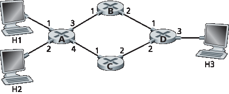
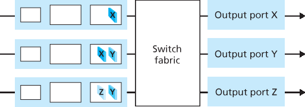

家庭作业问题和疑问#
Homework Problems and Questions
SECTION 4.1#
R1. Let’s review some of the terminology used in this textbook. Recall that the name of a transport-layer packet is segment and that the name of a link-layer packet is frame. What is the name of a network-layer packet? Recall that both routers and link-layer switches are called packet switches. What is the fundamental difference between a router and link-layer switch?
R2. We noted that network layer functionality can be broadly divided into data plane functionality and control plane functionality. What are the main functions of the data plane? Of the control plane?
R3. We made a distinction between the forwarding function and the routing function performed in the network layer. What are the key differences between routing and forwarding?
R4. What is the role of the forwarding table within a router?
R5. We said that a network layer’s service model “defines the characteristics of end-to-end transport of packets between sending and receiving hosts.” What is the service model of the Internet’s network layer? What guarantees are made by the Internet’s service model regarding the host-to-host delivery of datagrams?
SECTION 4.2#
R6. In Section 4.2 , we saw that a router typically consists of input ports, output ports, a switching fabric and a routing processor. Which of these are implemented in hardware and which are implemented in software? Why? Returning to the notion of the network layer’s data plane and control plane, which are implemented in hardware and which are implemented in software? Why?
R7. Discuss why each input port in a high-speed router stores a shadow copy of the forwarding table.
R8. What is meant by destination-based forwarding? How does this differ from generalized forwarding (assuming you’ve read Section 4.4 , which of the two approaches are adopted by Software-Defined Networking)?
R9. Suppose that an arriving packet matches two or more entries in a router’s forwarding table. With traditional destination-based forwarding, what rule does a router apply to determine which of these rules should be applied to determine the output port to which the arriving packet should be switched?
R10. Three types of switching fabrics are discussed in Section 4.2 . List and briefly describe each type. Which, if any, can send multiple packets across the fabric in parallel?
R11. Describe how packet loss can occur at input ports. Describe how packet loss at input ports can be eliminated (without using infinite buffers).
R12. Describe how packet loss can occur at output ports. Can this loss be prevented by increasing the switch fabric speed?
R13. What is HOL blocking? Does it occur in input ports or output ports?
R14. In Section 4.2 , we studied FIFO, Priority, Round Robin (RR), and Weighted Fair Queueing (WFQ) packet scheduling disciplines? Which of these queueing disciplines ensure that all packets depart in the order in which they arrived?
R15. Give an example showing why a network operator might want one class of packets to be given priority over another class of packets.
R16. What is an essential different between RR and WFQ packet scheduling? Is there a case (Hint: Consider the WFQ weights) where RR and WFQ will behave exactly the same?
SECTION 4.3#
R17. Suppose Host A sends Host B a TCP segment encapsulated in an IP datagram. When Host B receives the datagram, how does the network layer in Host B know it should pass the segment (that is, the payload of the datagram) to TCP rather than to UDP or to some other upper-layer protocol?
R18. What field in the IP header can be used to ensure that a packet is forwarded through no more than N routers?
R19. Recall that we saw the Internet checksum being used in both transport-layer segment (in UDP and TCP headers, Figures 3.7 and 3.29 respectively) and in network-layer datagrams (IP header, Figure 4.16 ). Now consider a transport layer segment encapsulated in an IP datagram. Are the checksums in the segment header and datagram header computed over any common bytes in the IP datagram? Explain your answer.
R20. When a large datagram is fragmented into multiple smaller datagrams, where are these smaller datagrams reassembled into a single larger datagram?
R21. Do routers have IP addresses? If so, how many?
R22. What is the 32-bit binary equivalent of the IP address 223.1.3.27?
R23. Visit a host that uses DHCP to obtain its IP address, network mask, default router, and IP address of its local DNS server. List these values.
R24. Suppose there are three routers between a source host and a destination host. Ignoring fragmentation, an IP datagram sent from the source host to the destination host will travel over how many interfaces? How many forwarding tables will be indexed to move the datagram from the source to the destination?
R25. Suppose an application generates chunks of 40 bytes of data every 20 msec, and each chunk gets encapsulated in a TCP segment and then an IP datagram. What percentage of each datagram will be overhead, and what percentage will be application data?
R26. Suppose you purchase a wireless router and connect it to your cable modem. Also suppose that your ISP dynamically assigns your connected device (that is, your wireless router) one IP address. Also suppose that you have five PCs at home that use 802.11 to wirelessly connect to your wireless router. How are IP addresses assigned to the five PCs? Does the wireless router use NAT? Why or why not?
R27. What is meant by the term “route aggregation”? Why is it useful for a router to perform route aggregation?
R28. What is meant by a “plug-and-play” or “zeroconf” protocol?
R29. What is a private network address? Should a datagram with a private network address ever be present in the larger public Internet? Explain.
R30. Compare and contrast the IPv4 and the IPv6 header fields. Do they have any fields in common?
R31. It has been said that when IPv6 tunnels through IPv4 routers, IPv6 treats the IPv4 tunnels as link-layer protocols. Do you agree with this statement? Why or why not?
SECTION 4.4#
R32. How does generalized forwarding differ from destination-based forwarding?
R33. What is the difference between a forwarding table that we encountered in destination-based forwarding in Section 4.1 and OpenFlow’s flow table that we encountered in Section 4.4 ?
R34. What is meant by the “match plus action” operation of a router or switch? In the case of destination-based forwarding packet switch, what is matched and what is the action taken? In the case of an SDN, name three fields that can be matched, and three actions that can be taken. R35. Name three header fields in an IP datagram that can be “matched” in OpenFlow 1.0 generalized forwarding. What are three IP datagram header fields that cannot be “matched” in OpenFlow?
Problems#
P1. Consider the network below.
Show the forwarding table in router A, such that all traffic destined to host H3 is forwarded through interface 3.
Can you write down a forwarding table in router A, such that all traffic from H1 destined to host H3 is forwarded through interface 3, while all traffic from H2 destined to host H3 is forwarded through interface 4? (Hint: This is a trick question.)

P2. Suppose two packets arrive to two different input ports of a router at exactly the same time. Also suppose there are no other packets anywhere in the router.
Suppose the two packets are to be forwarded to two different output ports. Is it possible to forward the two packets through the switch fabric at the same time when the fabric uses a shared bus?
Suppose the two packets are to be forwarded to two different output ports. Is it possible to forward the two packets through the switch fabric at the same time when the fabric uses switching via memory?
Suppose the two packets are to be forwarded to the same output port. Is it possible to forward the two packets through the switch fabric at the same time when the fabric uses a crossbar?
P3. In Section 4.2 , we noted that the maximum queuing delay is (n–1)D if the switching fabric is n times faster than the input line rates. Suppose that all packets are of the same length, n packets arrive at the same time to the n input ports, and all n packets want to be forwarded to different output ports. What is the maximum delay for a packet for the (a) memory, (b) bus, and (c) crossbar switching fabrics?
P4. Consider the switch shown below. Suppose that all datagrams have the same fixed length, that the switch operates in a slotted, synchronous manner, and that in one time slot a datagram can be transferred from an input port to an output port. The switch fabric is a crossbar so that at most one datagram can be transferred to a given output port in a time slot, but different output ports can receive datagrams from different input ports in a single time slot. What is the minimal number of time slots needed to transfer the packets shown from input ports to their output ports, assuming any input queue scheduling order you want (i.e., it need not have HOL blocking)? What is the largest number of slots needed, assuming the worst-case scheduling order you can devise, assuming that a non-empty input queue is never idle?

P5. Consider a datagram network using 32-bit host addresses. Suppose a router has four links, numbered 0 through 3, and packets are to be forwarded to the link interfaces as follows:
Destination Address Range |
Link Interface |
|---|---|
11100000 00000000 00000000 00000000 |
0 |
through |
|
11100000 00111111 11111111 11111111 |
|
11100000 01000000 00000000 00000000 |
1 |
through |
|
11100000 01000000 11111111 11111111 |
|
11100000 01000001 00000000 00000000 |
2 |
through |
|
11100001 01111111 11111111 11111111 |
|
otherwise |
3 |
Provide a forwarding table that has five entries, uses longest prefix matching, and forwards packets to the correct link interfaces.
Describe how your forwarding table determines the appropriate link interface for datagrams with destination addresses:
11001000 10010001 01010001 01010101 11100001 01000000 11000011 00111100 11100001 10000000 00010001 01110111
P6. Consider a datagram network using 8-bit host addresses. Suppose a router uses longest prefix matching and has the following forwarding table:
Prefix Match |
Interface |
|---|---|
00 |
0 |
010 |
1 |
011 |
2 |
10 |
2 |
11 |
3 |
For each of the four interfaces, give the associated range of destination host addresses and the number of addresses in the range.
P7. Consider a datagram network using 8-bit host addresses. Suppose a router uses longest prefix matching and has the following forwarding table:
Prefix Match |
Interface |
|---|---|
1 |
0 |
10 |
1 |
111 |
2 |
otherwise |
3 |
For each of the four interfaces, give the associated range of destination host addresses and the number of addresses in the range.
P8. Consider a router that interconnects three subnets: Subnet 1, Subnet 2, and Subnet 3. Suppose all of the interfaces in each of these three subnets are required to have the prefix 223.1.17/24. Also suppose that Subnet 1 is required to support at least 60 interfaces, Subnet 2 is to support at least 90 interfaces, and Subnet 3 is to support at least 12 interfaces. Provide three network addresses (of the form a.b.c.d/x) that satisfy these constraints.
P9. In Section 4.2.2 an example forwarding table (using longest prefix matching) is given. Rewrite this forwarding table using the a.b.c.d/x notation instead of the binary string notation.
P10. In Problem P5 you are asked to provide a forwarding table (using longest prefix matching). Rewrite this forwarding table using the a.b.c.d/x notation instead of the binary string notation.
P11. Consider a subnet with prefix 128.119.40.128/26. Give an example of one IP address (of form xxx.xxx.xxx.xxx) that can be assigned to this network. Suppose an ISP owns the block of addresses of the form 128.119.40.64/26. Suppose it wants to create four subnets from this block, with each block having the same number of IP addresses. What are the prefixes (of form a.b.c.d/x) for the four subnets?
P12. Consider the topology shown in Figure 4.20 . Denote the three subnets with hosts (starting clockwise at 12:00) as Networks A, B, and C. Denote the subnets without hosts as Networks D, E, and F.
Assign network addresses to each of these six subnets, with the following constraints: All addresses must be allocated from 214.97.254/23; Subnet A should have enough addresses to support 250 interfaces; Subnet B should have enough addresses to support 120 interfaces; and Subnet C should have enough addresses to support 120 interfaces. Of course, subnets D, E and F should each be able to support two interfaces. For each subnet, the assignment should take the form a.b.c.d/x or a.b.c.d/x – e.f.g.h/y.
Using your answer to part (a), provide the forwarding tables (using longest prefix matching) for each of the three routers.
P13. Use the whois service at the American Registry for Internet Numbers (http://www.arin.net/whois) to determine the IP address blocks for three universities. Can the whois services be used to determine with certainty the geographical location of a specific IP address? Use www.maxmind.com to determine the locations of the Web servers at each of these universities.
P14. Consider sending a 2400-byte datagram into a link that has an MTU of 700 bytes. Suppose the original datagram is stamped with the identification number 422. How many fragments are generated? What are the values in the various fields in the IP datagram(s) generated related to fragmentation?
P15. Suppose datagrams are limited to 1,500 bytes (including header) between source Host A and destination Host B. Assuming a 20-byte IP header, how many datagrams would be required to send an MP3 consisting of 5 million bytes? Explain how you computed your answer.
P16. Consider the network setup in Figure 4.25 . Suppose that the ISP instead assigns the router the address 24.34.112.235 and that the network address of the home network is 192.168.1/24.
Assign addresses to all interfaces in the home network.
Suppose each host has two ongoing TCP connections, all to port 80 at host 128.119.40.86. Provide the six corresponding entries in the NAT translation table.
P17. Suppose you are interested in detecting the number of hosts behind a NAT. You observe that the IP layer stamps an identification number sequentially on each IP packet. The identification number of the first IP packet generated by a host is a random number, and the identification numbers of the subsequent IP packets are sequentially assigned. Assume all IP packets generated by hosts behind the NAT are sent to the outside world.
Based on this observation, and assuming you can sniff all packets sent by the NAT to the outside, can you outline a simple technique that detects the number of unique hosts behind a NAT? Justify your answer.
If the identification numbers are not sequentially assigned but randomly assigned, would your technique work? Justify your answer.
P18. In this problem we’ll explore the impact of NATs on P2P applications. Suppose a peer with username Arnold discovers through querying that a peer with username Bernard has a file it wants to download. Also suppose that Bernard and Arnold are both behind a NAT. Try to devise a technique that will allow Arnold to establish a TCP connection with Bernard without application- specific NAT configuration. If you have difficulty devising such a technique, discuss why.
P19. Consider the SDN OpenFlow network shown in Figure 4.30 . Suppose that the desired forwarding behavior for datagrams arriving at s2 is as follows:
any datagrams arriving on input port 1 from hosts h5 or h6 that are destined to hosts h1 or h2 should be forwarded over output port 2;
any datagrams arriving on input port 2 from hosts h1 or h2 that are destined to hosts h5 or h6 should be forwarded over output port 1;
any arriving datagrams on input ports 1 or 2 and destined to hosts h3 or h4 should be delivered to the host specified;
hosts h3 and h4 should be able to send datagrams to each other.
Specify the flow table entries in s2 that implement this forwarding behavior.
P20. Consider again the SDN OpenFlow network shown in Figure 4.30 . Suppose that the desired forwarding behavior for datagrams arriving from hosts h3 or h4 at s2 is as follows:
any datagrams arriving from host h3 and destined for h1, h2, h5 or h6 should be forwarded in a clockwise direction in the network;
any datagrams arriving from host h4 and destined for h1, h2, h5 or h6 should be forwarded in a counter-clockwise direction in the network.
Specify the flow table entries in s2 that implement this forwarding behavior.
P21. Consider again the scenario from P19 above. Give the flow tables entries at packet switches s1 and s3, such that any arriving datagrams with a source address of h3 or h4 are routed to the destination hosts specified in the destination address field in the IP datagram. (Hint: Your forwarding table rules should include the cases that an arriving datagram is destined for a directly attached host or should be forwarded to a neighboring router for eventual host delivery there.)
P22. Consider again the SDN OpenFlow network shown in Figure 4.30 . Suppose we want switch s2 to function as a firewall. Specify the flow table in s2 that implements the following firewall behaviors (specify a different flow table for each of the four firewalling behaviors below) for delivery of datagrams destined to h3 and h4. You do not need to specify the forwarding behavior in s2 that forwards traffic to other routers.
Only traffic arriving from hosts h1 and h6 should be delivered to hosts h3 or h4 (i.e., that arriving traffic from hosts h2 and h5 is blocked).
Only TCP traffic is allowed to be delivered to hosts h3 or h4 (i.e., that UDP traffic is blocked).
Only traffic destined to h3 is to be delivered (i.e., all traffic to h4 is blocked).
Only UDP traffic from h1 and destined to h3 is to be delivered. All other traffic is blocked.